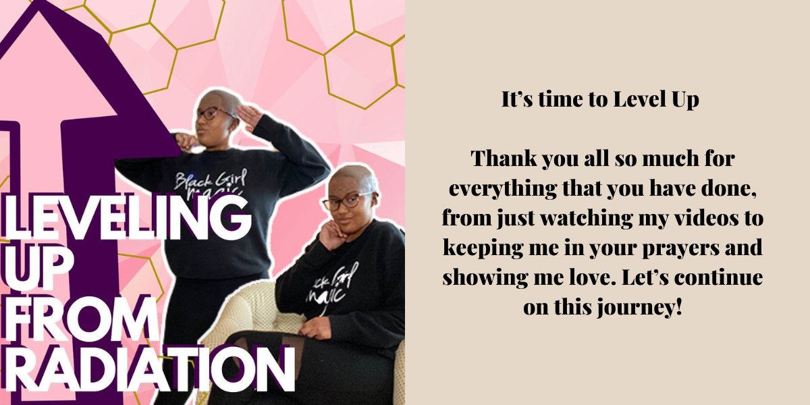
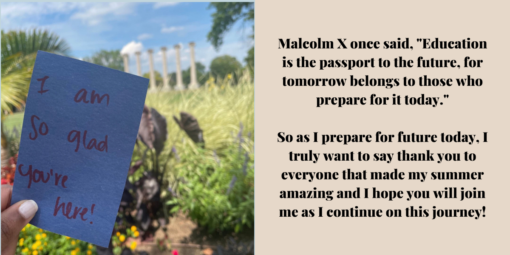
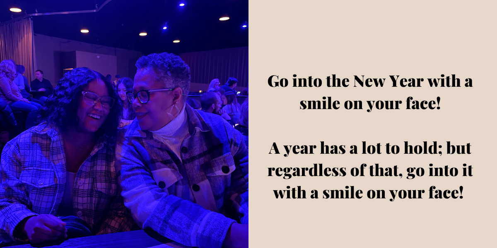
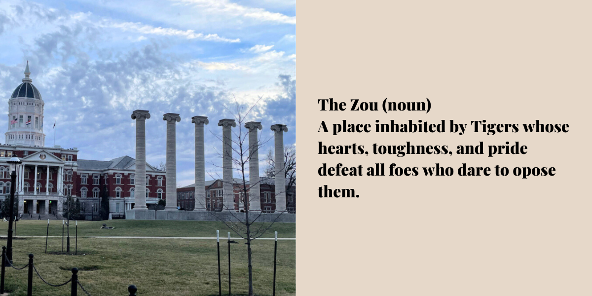

1 / 6

2 / 6

3 / 6

4 / 6

5 / 6

6 / 6


I first wanted to pursue social media (Instagram, YouTube, etc...) because I wanted to keep a record of where I've been, my personality, my intelligence, and my growth; to encourage me on my journey . Now, I realize telling the challenges and obstacles I've experienced can inspire. So thank you all for joining me on my journey and I hope my story can have an impact on you!
Things happen in our lives; we encounter challenges that we may not have chosen to experience. But our choice comes in when we chose how to react to them.